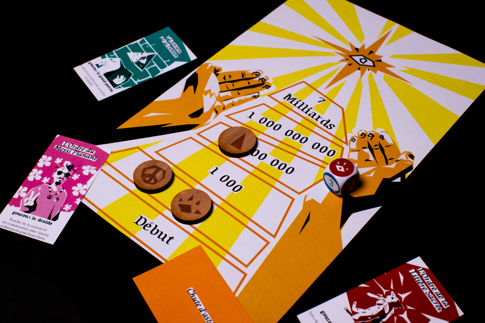
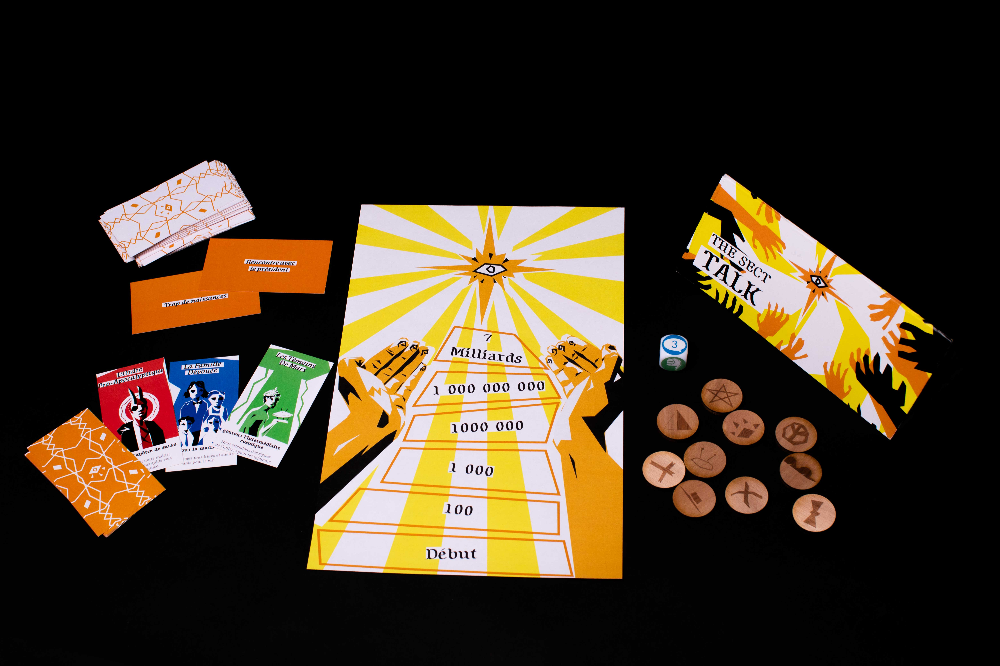

Ce projet provient d'un workshop jeu de société avec Tatiana Vilela Dos Santos. En une semaine, nous avons créé un jeu de A à Z, de son fonctionnement à son identité visuelle.

The Sect Talk est un jeu d'improvisation déjanté, où chaque joueur incarne un gourou de secte. A force de discours convaincants, ils doivent convertir la planète à leur cause malgré tous les événements qui puissent survenir !
Nous avons choisi un univers coloré, reprenant des éléments visuels de l'univers de la religion avec l'oeil en logotype, et la forme triangulaire de la boîte. Cette dernière se retrouve également dans le plateau, qui reprend visuellement l'idée de l'organisation pyramidale.
